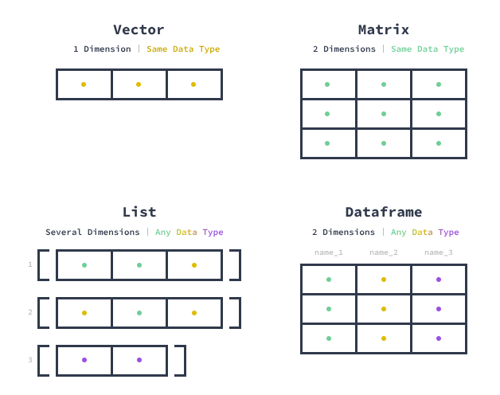

a <- 3.5
class(a)[1] "numeric"typeof(a) # typeof numeriklerin tipini double olarak gösterir.[1] "double"is.numeric(a) # verinin tipinin numerik olup olmadığı sorgulanır.[1] TRUER’da kulllanılan 5 temel veri tipi vardır. Bu veri tipleri atomic vectörler olarak da bilinir. Atomic olması vektörlerin homojen olması anlamına gelmektedir. Yani vektör içerisinde aynı veri tipinden değerler yer alabilir. Veri tipleri;
numeric veya double (reel sayılar)
integer (tamsayılar)
complex (karmaşık sayılar)
character (metinsel ifadeler)
logical, TRUE ve FALSE (mantıksal)
typeof() veya class() fonksiyonları ile veri tipi öğrenilebilir.
typeof() ve class() fonksiyonları, R programlama dilinde nesnelerin özelliklerini sorgulamak için kullanılır. Farklı amaçlara hizmet ederler ve bazı durumlarda farklı sonuçlar üretebilirler.
typeof() fonksiyonu, bir nesnenin temel veri türünü belirler. Örneğin, bir nesnenin karakter dizisi (string), sayı, liste, fonksiyon veya vektör gibi temel veri türlerinden hangisine ait olduğunu gösterir. Ancak, nesnenin özel sınıfını (class) ifade etmez. Örneğin, bir faktörün typeof() değeri “integer” olabilir.
class() fonksiyonu ise bir nesnenin özel sınıfını belirtir. Eğer bir nesne özel bir sınıfa aitse (örneğin, bir veri çerçevesi veya faktör), class() fonksiyonu bu özel sınıfın adını verir. Eğer nesne birden fazla sınıfa aitse, sınıflar bir sıra halinde listelenir.
Bu fonksiyonlar genellikle birlikte kullanılır çünkü bir nesnenin veri tipi ve sınıfı arasında farklılıklar olabilir. Örneğin, bir veri çerçevesi typeof() ile incelendiğinde list çıkabilir, çünkü veri çerçeveleri bir liste türündedir. Ancak, class() fonksiyonu bu nesnenin özel sınıfını, yani data.frame olarak gösterecektir. Bu farklılıklar, bir nesnenin hangi özelliklere sahip olduğunu daha iyi anlamak için kullanılabilir.
numeric
a <- 3.5
class(a)[1] "numeric"typeof(a) # typeof numeriklerin tipini double olarak gösterir.[1] "double"is.numeric(a) # verinin tipinin numerik olup olmadığı sorgulanır.[1] TRUEinteger
b <- 5
class(b)[1] "numeric"is.integer(b)[1] FALSEc <- 6L # integer olması için sayının sağına L yazılır.
class(c)[1] "integer"is.integer(c)[1] TRUEclass(as.integer(b)) # as. ile baslayan fonksiyonlar dönüşüm için kullanılır.[1] "integer"complex
z <- 4 + 2i
class(z)[1] "complex"character
d <- "R Programlama"
class(d)[1] "character"e <- "5.5"
class(e)[1] "character"class(as.numeric(e))[1] "numeric"logical
x <- TRUE
y <- FALSE
class(c(x,y))[1] "logical"as.integer(c(x,y)) # TRUE ve FALSE numeric olarak 1 ve 0 değerine karşılık gelir.[1] 1 0
R’daki en temel nesneler vektörlerdir.
Vektörler homojen yapıya sahiptir yani bütün elemanları aynı veri tipinde olmalıdır.
Vektörler tek boyutludur.
Bir vektör oluşturmak için kullanabilecek en temel fonksiyon c()’dir.
v <- c(1,4,7,2,5,8,3,6,9)
v[1] # 1. elemanını seçer[1] 1v[3] # 3. elemanını seçer[1] 7v[c(3,7)] # 3. ve 7. elemani secer[1] 7 3v[1:6] # 1. elemandan 6. elemana kadar secer[1] 1 4 7 2 5 8v[-2] # 2. elemani haric tutarak secer[1] 1 7 2 5 8 3 6 9length(v) # vektörün uzunluğunu gösterir[1] 9v2 <- c(v,12) # vektöre eleman ekleme
v2 [1] 1 4 7 2 5 8 3 6 9 12# : ile başlangıç ve bitiş değerleri belli olan vektörler yaratılabilir.
v3 <- 1:10
v3 [1] 1 2 3 4 5 6 7 8 9 10v4 <- 11:20
v4 [1] 11 12 13 14 15 16 17 18 19 20# Vektörler ile matematiksel işlemler yapılabilir.
v3 + v4 [1] 12 14 16 18 20 22 24 26 28 30v3 / v4 [1] 0.09090909 0.16666667 0.23076923 0.28571429 0.33333333 0.37500000
[7] 0.41176471 0.44444444 0.47368421 0.500000002 * v3 - v4 [1] -9 -8 -7 -6 -5 -4 -3 -2 -1 0Aşağıda vektörler ile birlikte sıklıkla kulanılan bazı fonksiyonlara yer verilmiştir.
seq() fonksiyonu, ardışık sayı dizileri oluşturmak için kullanılır. Bu fonksiyon, başlangıç ve bitiş değerlerinin yanı sıra belirli bir artış veya azalış miktarını belirterek ardışık bir dizi oluşturmanızı sağlar.
seq() fonksiyonu genellikle üç temel parametre alır:
from: Dizinin başlangıç değeri.
to: Dizinin bitiş değeri.
by: Opsiyonel olarak belirlenebilen artış/azalış miktarı.
seq(from = 5, to = 50, by =5) # 5 ile başlayan 50 ile biten 5şer artan vektör [1] 5 10 15 20 25 30 35 40 45 50seq(from = 5, to = 50, length = 7) # 5 ile başlayan 50 ile 7 elemanlı vektör[1] 5.0 12.5 20.0 27.5 35.0 42.5 50.0seq(5,1,-1) # 5 ile baslayıp 1'e kadar 1'er azaltarak vektor olusturma[1] 5 4 3 2 1rep() fonksiyonu, R programlama dilinde tekrarlanan öğelerden oluşan vektörler oluşturmak için kullanılır. Bu fonksiyon, belirli bir öğenin veya öğelerin tekrarlanarak bir vektör oluşturulmasına izin verir.
rep() fonksiyonunun temel parametreleri şunlardır:
x: Tekrarlanacak öğelerin kendisi veya vektörü.
times: Tekrar sayısını belirten bir sayı veya vektör.
each: Her bir öğenin kaç kez tekrarlanacağını belirten bir sayı veya vektör.
length.out: çıktının istenen uzunluğu
# 8 tane 10 değeri olan vektör
rep(10,times = 8) [1] 10 10 10 10 10 10 10 10# 1,2,3 vektörünün 4 defa tekrarlanması
rep(c(1,2,3), times = 4) [1] 1 2 3 1 2 3 1 2 3 1 2 3# each argünmanı ile sıralı ve tekrarlı vektör
rep(c(1,2,3), each = 4) [1] 1 1 1 1 2 2 2 2 3 3 3 3# sadece ilk 4 elemanı verir
rep(1:4, each = 2, length.out = 4) [1] 1 1 2 2all() fonksiyonu, R programlama dilinde bir mantıksal vektörün tüm elemanlarının TRUE olup olmadığını kontrol etmek için kullanılır. Eğer vektörde en az bir FALSE değer varsa, FALSE sonucunu verir. Eğer vektördeki tüm elemanlar TRUE ise, TRUE döndürür. Bu fonksiyon genellikle koşullu ifadelerde ve vektörlerin doğruluğunu kontrol etmek için kullanılır.
# Bir vektör oluşturalım
sayi_vektoru <- c(10, 20, 30, 40, 50)
# Tüm sayıların 0 ile 60 arasında olup olmadığını kontrol edelim
all(sayi_vektoru > 0 & sayi_vektoru < 60)[1] TRUE# vektördeki tüm elemanların şartı sağlayıp sağlamadıkları test edelim
all(sayi_vektoru > 30) [1] FALSEany() fonksiyonu, R programlama dilinde bir mantıksal vektörün içinde en az bir tane TRUE değerinin olup olmadığını kontrol etmek için kullanılır. Eğer vektörde en az bir TRUE değer varsa, TRUE sonucunu verir. Eğer vektördeki tüm elemanlar FALSE ise, FALSE döndürür. Bu fonksiyon genellikle koşullu ifadelerde ve vektörlerin içeriğini kontrol etmek için kullanılır.
# vektördeki en az bir elemanın şartı sağlayıp sağlamadığı test edelim
any(sayi_vektoru) Warning in any(sayi_vektoru): 'double' tipinin argümanı mantıksala zorlanıyor[1] TRUE# Vektörde en az bir elemanın 10 olup olmadığını kontrol edelim
any(sayi_vektoru==10) [1] TRUEunique() fonksiyonu, R programlama dilinde bir vektördeki benzersiz (tekrar etmeyen) elemanları bulmak için kullanılır. Bu fonksiyon, vektördeki tekrarlanan elemanları kaldırarak yalnızca benzersiz elemanları içeren yeni bir vektör oluşturur. Bu fonksiyon, veri temizleme veya benzersiz değerlerin bulunması gibi durumlarda sıklıkla kullanılır.
# Tekrarlı gözlmeleri olan bir vektör oluşturalım
vektor <- rep(1:5,3)
vektor [1] 1 2 3 4 5 1 2 3 4 5 1 2 3 4 5unique(vektor) # tekrarlı gözlemler temizlenir[1] 1 2 3 4 5duplicated() fonksiyonu, bir vektördeki tekrarlanan değerleri tespit etmek için kullanılır. Bu fonksiyon, bir vektördeki her bir elemanın önceki elemanlar arasında daha önce görülüp görülmediğini kontrol eder ve tekrar eden değerleri belirler. Bu fonksiyon, veri temizleme veya tekrarlanan değerlerin tespit edilmesi gereken durumlarda kullanışlıdır.
# tekrarlı gözlemlerin varlığını kontrol eder
duplicated(vektor) [1] FALSE FALSE FALSE FALSE FALSE TRUE TRUE TRUE TRUE TRUE TRUE TRUE
[13] TRUE TRUE TRUE# tekrarlı gözlemleri listeler
vektor[duplicated(vektor)] [1] 1 2 3 4 5 1 2 3 4 5sort() fonksiyonu, vektörleri sıralamak için kullanılır. Bu fonksiyon, sayısal veya karakter vektörlerin elemanlarını artan veya azalan sıraya göre sıralar.
sort(x, decreasing = FALSE)Burada:
x, sıralanacak olan vektördür.
decreasing, sıralamanın azalan sırada olup olmayacağını belirleyen bir mantıksal değerdir (varsayılan olarak FALSE).
# Bir sayısal vektör oluşturalım
vektor <- c(5, 2, 8, 1, 4)
# küçükten büyüğe yani artan sıralama yapar.
sort(vektor)[1] 1 2 4 5 8# büyükten küçüğe yani azalan sıralama yapar.
sort(vektor,decreasing = TRUE) [1] 8 5 4 2 1# Bir karakter vektörü oluşturalım
karakter_vektor <- c("elma", "armut", "muz", "kavun")
# karakter tipinideki vektörler alfabetik sıraya göre sıralanır
sort(karakter_vektor)[1] "armut" "elma" "kavun" "muz" sort(karakter_vektor,decreasing = TRUE) [1] "muz" "kavun" "elma" "armut"is.na() fonksiyonu, R programlama dilinde bir vektördeki veya veri çerçevesindeki değerlerin NA (Not Available - Mevcut Değil) olup olmadığını kontrol etmek ve verilerin içinde eksik veya mevcut olmayan değerleri tespit etmek için kullanılır.için kullanılır. Her NA değeri için ilgili konumda TRUE, değilse FALSE döndürür. Veri temizleme ve analiz aşamalarında oldukça faydalıdır.
# Bir vektör oluşturalım
vektor <- c(1, 2, NA, 4, NA, 6)
# vektördeki elamanların NA olup olmadığını test eder.
is.na(vektor)[1] FALSE FALSE TRUE FALSE TRUE FALSE# NA olmayan değerleri filtreleyelim
vektor[!is.na(vektor)][1] 1 2 4 6# NA değerlerini bir başka değerle değiştirelim, örneğin 0 ile
vektor[is.na(vektor)] <- 0
vektor[1] 1 2 0 4 0 6which() fonksiyonu, belirli bir koşulu sağlayan veya belirli bir değere sahip olan elemanların konumlarını bulmak için kullanılır. Bu fonksiyon, bir vektörde veya bir koşulu karşılayan elemanların indislerini döndürür. Filtreleme veya koşullu indeksleme gibi durumlarda oldukça faydalıdır.
# Bir vektör oluşturalım
vektor <- c(10, 20, 30, 40, 50)
# 30'dan büyük olan elemanların indekslerini bulalım
which(vektor > 30)[1] 4 5vektor[which(vektor > 30)][1] 40 50# vektördeki maximum elemanın posizyonunu gösterir
which.max(vektor)[1] 5# vektördeki minimum elemanın posizyonunu gösterir
which.min(vektor) [1] 1veri <- 1:10
mean(veri) # NA varsa sonuç NA döner[1] 5.5mean(veri, na.rm = TRUE) # aritmetik ortalama[1] 5.5median(veri) # medyan (ortanca)[1] 5.5sum(veri,na.rm = TRUE) # vektör toplamını verir[1] 55min(veri,na.rm = TRUE) # vektörün minimum değeri[1] 1max(veri,na.rm = TRUE) # vektörün maximum değeri[1] 10sd(veri,na.rm = TRUE) # standart sapma[1] 3.02765var(veri) # varyans[1] 9.166667summary(veri) # Özet istatistikler Min. 1st Qu. Median Mean 3rd Qu. Max.
1.00 3.25 5.50 5.50 7.75 10.00 quantile(veri) # Çeyreklikler 0% 25% 50% 75% 100%
1.00 3.25 5.50 7.75 10.00 Matrisler, iki boyutlu yani satır ve sütunları olan atomik vektörlerdir.
matrix() fonksiyonu ile tanımlanmaktadır.
Vektörlerin birleştirilmesi ile de matrisler oluşturulabilir. rbind satır bazlı alt alta birleştirme, cbind ise sütun bazlı yanyana birleştirme yapar. Burada vektörlerin aynı boyutlarda olmasına dikkat edilmesi gerekir.
v1 <- c(3,4,6,8,5)
v2 <- c(4,8,4,7,1)
v3 <- c(2,2,5,4,6)
v4 <- c(4,7,5,2,5)
matris <- cbind(v1, v2, v3, v4)
matris v1 v2 v3 v4
[1,] 3 4 2 4
[2,] 4 8 2 7
[3,] 6 4 5 5
[4,] 8 7 4 2
[5,] 5 1 6 5is.matrix(matris)[1] TRUEdim(matris) # matrisin boyutları[1] 5 4matrix(nrow = 3, ncol = 3, 1:9) [,1] [,2] [,3]
[1,] 1 4 7
[2,] 2 5 8
[3,] 3 6 9matrix(1:9, nrow = 3, ncol = 3, byrow = TRUE) # byrow satırlara göre oluşturur. [,1] [,2] [,3]
[1,] 1 2 3
[2,] 4 5 6
[3,] 7 8 9mat <- seq(3, 21, by = 2)
mat [1] 3 5 7 9 11 13 15 17 19 21dim(mat) <- c(5,2)
mat [,1] [,2]
[1,] 3 13
[2,] 5 15
[3,] 7 17
[4,] 9 19
[5,] 11 21matrix(c(1,2,3,11,22,33), nrow = 2, ncol = 3, byrow = TRUE) [,1] [,2] [,3]
[1,] 1 2 3
[2,] 11 22 33# normal dağılımdan 0 ortalamalı, 1 standart sapmalı 16 sayı üret
MA <- rnorm(16, 0, 1)
MA <- matrix(MA, nrow = 4, ncol = 4)
# normal dağılımdan 90 ortalamalı, 10 standart sapmalı 16 sayı üret
MB <- rnorm(16, 90, 10)
MB <- matrix(MB, nrow = 4, ncol = 4)
m <- rbind(MA, MB)
m [,1] [,2] [,3] [,4]
[1,] -0.80809515 1.2940040 1.59587908 0.4709399
[2,] 0.39759881 0.3563691 0.01242972 -0.7117083
[3,] -0.03392505 -1.8235310 -1.76296155 0.7665134
[4,] -0.36179965 1.1562111 -0.72837094 0.9790274
[5,] 91.44776938 109.8026984 82.67684754 77.5985606
[6,] 91.69897210 89.7303603 75.68612667 93.9325751
[7,] 85.62133108 82.1366716 82.74412082 101.4119032
[8,] 75.02408658 84.2345892 94.60803459 75.3857884# satır ve sütun isimlendirme
colnames(m) <- LETTERS[1:4]
rownames(m) <- tail(LETTERS,8)
m A B C D
S -0.80809515 1.2940040 1.59587908 0.4709399
T 0.39759881 0.3563691 0.01242972 -0.7117083
U -0.03392505 -1.8235310 -1.76296155 0.7665134
V -0.36179965 1.1562111 -0.72837094 0.9790274
W 91.44776938 109.8026984 82.67684754 77.5985606
X 91.69897210 89.7303603 75.68612667 93.9325751
Y 85.62133108 82.1366716 82.74412082 101.4119032
Z 75.02408658 84.2345892 94.60803459 75.3857884# Matris Elemanlarina Erismek
m[1,1] # 1. satır, 1.sütundak, eleman[1] -0.8080952m[4,2] # 4. satır, 2.sütundak, eleman[1] 1.156211m[,2] # 2. sütun elemanları S T U V W X
1.2940040 0.3563691 -1.8235310 1.1562111 109.8026984 89.7303603
Y Z
82.1366716 84.2345892 m[-3,] # 3. satır hariç tüm elemanlar A B C D
S -0.8080952 1.2940040 1.59587908 0.4709399
T 0.3975988 0.3563691 0.01242972 -0.7117083
V -0.3617996 1.1562111 -0.72837094 0.9790274
W 91.4477694 109.8026984 82.67684754 77.5985606
X 91.6989721 89.7303603 75.68612667 93.9325751
Y 85.6213311 82.1366716 82.74412082 101.4119032
Z 75.0240866 84.2345892 94.60803459 75.3857884# köşegen matris oluşturma
diag(2,nrow=3) [,1] [,2] [,3]
[1,] 2 0 0
[2,] 0 2 0
[3,] 0 0 2diag(1,5) # 5*5 birim matris [,1] [,2] [,3] [,4] [,5]
[1,] 1 0 0 0 0
[2,] 0 1 0 0 0
[3,] 0 0 1 0 0
[4,] 0 0 0 1 0
[5,] 0 0 0 0 1# transpose
t(m) S T U V W X Y
A -0.8080952 0.39759881 -0.03392505 -0.3617996 91.44777 91.69897 85.62133
B 1.2940040 0.35636915 -1.82353099 1.1562111 109.80270 89.73036 82.13667
C 1.5958791 0.01242972 -1.76296155 -0.7283709 82.67685 75.68613 82.74412
D 0.4709399 -0.71170827 0.76651339 0.9790274 77.59856 93.93258 101.41190
Z
A 75.02409
B 84.23459
C 94.60803
D 75.38579# matris ile işlemler
m1 <- matrix(1:4,nrow=2)
m2 <- matrix(5:8,nrow=2)
m1;m2 [,1] [,2]
[1,] 1 3
[2,] 2 4 [,1] [,2]
[1,] 5 7
[2,] 6 8m1 + m2 # matris elemanları birebir toplanır [,1] [,2]
[1,] 6 10
[2,] 8 12m1 / m2 # matris elemanları birebir toplanır [,1] [,2]
[1,] 0.2000000 0.4285714
[2,] 0.3333333 0.5000000m1 * m2 # matris elemanları birebir çarpılır [,1] [,2]
[1,] 5 21
[2,] 12 32m1 %*% m2 # matris çarpımı [,1] [,2]
[1,] 23 31
[2,] 34 46solve(m2) # matrisin tersi [,1] [,2]
[1,] -4 3.5
[2,] 3 -2.5rowSums(m1) # satır toplamları[1] 4 6rowMeans(m1) # satır ortalaması[1] 2 3colSums(m1) # sütun toplamları[1] 3 7colMeans(m1) # sütun ortalaması[1] 1.5 3.5Listeler, birbirinden farklı veri tiplerine sahip vektörler, matrisler vb farklı objeleri birarada tutabilen yapılardır.
list() ile liste oluşturulur.
x <- c(3,5,7)
y <- letters[1:10]
z <- c(rep(TRUE,3),rep(FALSE,4))
list <- list(x,y,z)
list[[1]]
[1] 3 5 7
[[2]]
[1] "a" "b" "c" "d" "e" "f" "g" "h" "i" "j"
[[3]]
[1] TRUE TRUE TRUE FALSE FALSE FALSE FALSEclass(list) # listenin sınıfını verir[1] "list"str(list) # listenin yapısını verirList of 3
$ : num [1:3] 3 5 7
$ : chr [1:10] "a" "b" "c" "d" ...
$ : logi [1:7] TRUE TRUE TRUE FALSE FALSE FALSE ...names(list) <- c("numeric","karakter","mantıksal") # liste isimlendirme
list$numeric
[1] 3 5 7
$karakter
[1] "a" "b" "c" "d" "e" "f" "g" "h" "i" "j"
$mantıksal
[1] TRUE TRUE TRUE FALSE FALSE FALSE FALSElist$numeric[1] 3 5 7list$karakter [1] "a" "b" "c" "d" "e" "f" "g" "h" "i" "j"list$mantıksal[1] TRUE TRUE TRUE FALSE FALSE FALSE FALSElist[[2]] [1] "a" "b" "c" "d" "e" "f" "g" "h" "i" "j"list$numeric2 <- c(4:10) # listeye eleman ekleme
list$numeric
[1] 3 5 7
$karakter
[1] "a" "b" "c" "d" "e" "f" "g" "h" "i" "j"
$mantıksal
[1] TRUE TRUE TRUE FALSE FALSE FALSE FALSE
$numeric2
[1] 4 5 6 7 8 9 10list$numeric <- NULL # listeden eleman silme
list$karakter
[1] "a" "b" "c" "d" "e" "f" "g" "h" "i" "j"
$mantıksal
[1] TRUE TRUE TRUE FALSE FALSE FALSE FALSE
$numeric2
[1] 4 5 6 7 8 9 10unlist(list) # listeyi vektöre çevirir. karakter1 karakter2 karakter3 karakter4 karakter5 karakter6 karakter7
"a" "b" "c" "d" "e" "f" "g"
karakter8 karakter9 karakter10 mantıksal1 mantıksal2 mantıksal3 mantıksal4
"h" "i" "j" "TRUE" "TRUE" "TRUE" "FALSE"
mantıksal5 mantıksal6 mantıksal7 numeric21 numeric22 numeric23 numeric24
"FALSE" "FALSE" "FALSE" "4" "5" "6" "7"
numeric25 numeric26 numeric27
"8" "9" "10" Veri çerçevesi (dataframe), her sütunun bir değişkenin değerlerini ve her satırın her sütundan bir değer kümesini içerdiği bir tablo veya iki boyutlu dizi benzeri bir yapıdır. Bir veri çerçevesinin özellikleri şunlardır:
Sütun adları boş olmamalıdır.
Satır adları benzersiz olmalıdır.
Bir veri çerçevesinde saklanan veriler sayısal, faktör veya karakter tipinde olabilir.
Her sütun aynı sayıda veri öğesi içermelidir.
data.frame() fonksiyonunu uygulayarak bir veri çerçevesi oluşturabiliriz.
# data.frame oluşturma
set.seed(12345)
data <- data.frame(
row_num = 1:20,
col1 = rnorm(20),
col2 = runif(20), # uniform dağılımdam 20 gözlem üret
col3 = rbinom(20,size=5,prob = 0.5), # binom dağılımdam 20 gözlem üret
col4 = sample(c("TRUE","FALSE"),20,replace = TRUE),
col5 = sample(c(rep(c("E","K"),8),rep(NA,4))),
stringsAsFactors = TRUE # karakter olanlar faktör olarak değerlendirilsin
)
class(data)[1] "data.frame"head(data) # ilk 6 gözlemi gösterir row_num col1 col2 col3 col4 col5
1 1 0.5855288 0.7821933 3 FALSE E
2 2 0.7094660 0.4291988 2 TRUE E
3 3 -0.1093033 0.9272740 5 TRUE E
4 4 -0.4534972 0.7732432 3 FALSE K
5 5 0.6058875 0.2596812 5 TRUE E
6 6 -1.8179560 0.3212247 2 TRUE <NA>tail(data) # son 6 gözlemi gösterir row_num col1 col2 col3 col4 col5
15 15 -0.7505320 0.73249612 1 FALSE K
16 16 0.8168998 0.49924102 3 FALSE K
17 17 -0.8863575 0.72977197 4 FALSE K
18 18 -0.3315776 0.08033604 3 TRUE <NA>
19 19 1.1207127 0.43553048 3 FALSE K
20 20 0.2987237 0.23658045 1 FALSE Etail(data,10) # son 10 gözlemi gösterir row_num col1 col2 col3 col4 col5
11 11 -0.1162478 0.96447029 3 TRUE K
12 12 1.8173120 0.82730287 3 TRUE E
13 13 0.3706279 0.31502824 2 FALSE <NA>
14 14 0.5202165 0.21302545 2 TRUE K
15 15 -0.7505320 0.73249612 1 FALSE K
16 16 0.8168998 0.49924102 3 FALSE K
17 17 -0.8863575 0.72977197 4 FALSE K
18 18 -0.3315776 0.08033604 3 TRUE <NA>
19 19 1.1207127 0.43553048 3 FALSE K
20 20 0.2987237 0.23658045 1 FALSE Estr(data) # tablonun yapısını gösterir'data.frame': 20 obs. of 6 variables:
$ row_num: int 1 2 3 4 5 6 7 8 9 10 ...
$ col1 : num 0.586 0.709 -0.109 -0.453 0.606 ...
$ col2 : num 0.782 0.429 0.927 0.773 0.26 ...
$ col3 : int 3 2 5 3 5 2 4 1 3 4 ...
$ col4 : Factor w/ 2 levels "FALSE","TRUE": 1 2 2 1 2 2 2 1 2 2 ...
$ col5 : Factor w/ 2 levels "E","K": 1 1 1 2 1 NA 1 NA 2 1 ...summary(data) # tablonun özet istatistiklerini gösterir row_num col1 col2 col3 col4
Min. : 1.00 Min. :-1.81796 Min. :0.04346 Min. :1.00 FALSE: 9
1st Qu.: 5.75 1st Qu.:-0.36206 1st Qu.:0.23069 1st Qu.:2.00 TRUE :11
Median :10.50 Median : 0.09471 Median :0.43236 Median :3.00
Mean :10.50 Mean : 0.07652 Mean :0.46554 Mean :2.85
3rd Qu.:15.25 3rd Qu.: 0.61194 3rd Qu.:0.74268 3rd Qu.:3.25
Max. :20.00 Max. : 1.81731 Max. :0.96447 Max. :5.00
col5
E :8
K :8
NA's:4
# veri çerçevesinden belirli sütun/ları seçmek için $ veya [] kullanılır.
head(data$col1)[1] 0.5855288 0.7094660 -0.1093033 -0.4534972 0.6058875 -1.8179560head(data[,"col1"])[1] 0.5855288 0.7094660 -0.1093033 -0.4534972 0.6058875 -1.8179560# veri çerçevesinden belirli satır/ları seçmek için [] kullanılır.
data[1:2,] row_num col1 col2 col3 col4 col5
1 1 0.5855288 0.7821933 3 FALSE E
2 2 0.7094660 0.4291988 2 TRUE E# 3. and 5. satır ile 2. ve 4. kolon
data[c(3,5),c(2,4)] col1 col3
3 -0.1093033 5
5 0.6058875 5# koşula göre veriler seçilebilir
data$row_num > 12 # TRUE veya FALSE döner [1] FALSE FALSE FALSE FALSE FALSE FALSE FALSE FALSE FALSE FALSE FALSE FALSE
[13] TRUE TRUE TRUE TRUE TRUE TRUE TRUE TRUEdata[data$row_num > 12,] # koşula göre satırlar döner row_num col1 col2 col3 col4 col5
13 13 0.3706279 0.31502824 2 FALSE <NA>
14 14 0.5202165 0.21302545 2 TRUE K
15 15 -0.7505320 0.73249612 1 FALSE K
16 16 0.8168998 0.49924102 3 FALSE K
17 17 -0.8863575 0.72977197 4 FALSE K
18 18 -0.3315776 0.08033604 3 TRUE <NA>
19 19 1.1207127 0.43553048 3 FALSE K
20 20 0.2987237 0.23658045 1 FALSE E# subset ile tablo filtrelenebilir.
subset(data,
row_num >= 10 & col4 == 'TRUE',
select = c(row_num, col1, col2,col4)) row_num col1 col2 col4
10 10 -0.9193220 0.62554280 TRUE
11 11 -0.1162478 0.96447029 TRUE
12 12 1.8173120 0.82730287 TRUE
14 14 0.5202165 0.21302545 TRUE
18 18 -0.3315776 0.08033604 TRUE# names veya colnames ile sütun isimleri elde edilir.
names(data)[1] "row_num" "col1" "col2" "col3" "col4" "col5" colnames(data)[1] "row_num" "col1" "col2" "col3" "col4" "col5" # vektör ile sütun seçimi
cols <- c("col1","col2","col5")
head(data[cols]) col1 col2 col5
1 0.5855288 0.7821933 E
2 0.7094660 0.4291988 E
3 -0.1093033 0.9272740 E
4 -0.4534972 0.7732432 K
5 0.6058875 0.2596812 E
6 -1.8179560 0.3212247 <NA># sütun silme
data$col1 <- NULL
head(data) row_num col2 col3 col4 col5
1 1 0.7821933 3 FALSE E
2 2 0.4291988 2 TRUE E
3 3 0.9272740 5 TRUE E
4 4 0.7732432 3 FALSE K
5 5 0.2596812 5 TRUE E
6 6 0.3212247 2 TRUE <NA># sütun ekleme
data$col1 <- rnorm(20)
head(data) row_num col2 col3 col4 col5 col1
1 1 0.7821933 3 FALSE E 0.4768080
2 2 0.4291988 2 TRUE E 0.8424486
3 3 0.9272740 5 TRUE E -0.8903234
4 4 0.7732432 3 FALSE K 0.7529609
5 5 0.2596812 5 TRUE E 0.4452159
6 6 0.3212247 2 TRUE <NA> 0.4211062# sütunları sıralama
head(data[c("row_num","col1","col2","col3","col4","col5")]) row_num col1 col2 col3 col4 col5
1 1 0.4768080 0.7821933 3 FALSE E
2 2 0.8424486 0.4291988 2 TRUE E
3 3 -0.8903234 0.9272740 5 TRUE E
4 4 0.7529609 0.7732432 3 FALSE K
5 5 0.4452159 0.2596812 5 TRUE E
6 6 0.4211062 0.3212247 2 TRUE <NA># sıralama
head(data[order(data$col3),]) # artan row_num col2 col3 col4 col5 col1
8 8 0.04345645 1 FALSE <NA> -0.896320181
15 15 0.73249612 1 FALSE K 0.148543198
20 20 0.23658045 1 FALSE E 0.240173186
2 2 0.42919882 2 TRUE E 0.842448636
6 6 0.32122467 2 TRUE <NA> 0.421106220
13 13 0.31502824 2 FALSE <NA> -0.008925433head(data[order(-data$row_num),]) # azalan row_num col2 col3 col4 col5 col1
20 20 0.23658045 1 FALSE E 0.2401732
19 19 0.43553048 3 FALSE K 0.2583817
18 18 0.08033604 3 TRUE <NA> -0.1712566
17 17 0.72977197 4 FALSE K 0.7884411
16 16 0.49924102 3 FALSE K -0.3798679
15 15 0.73249612 1 FALSE K 0.1485432head(data[order(data$col3,-data$row_num),]) row_num col2 col3 col4 col5 col1
20 20 0.23658045 1 FALSE E 0.240173186
15 15 0.73249612 1 FALSE K 0.148543198
8 8 0.04345645 1 FALSE <NA> -0.896320181
14 14 0.21302545 2 TRUE K -0.326216850
13 13 0.31502824 2 FALSE <NA> -0.008925433
6 6 0.32122467 2 TRUE <NA> 0.421106220# kayıp gözlemler (missing values)
tail(is.na(data)) row_num col2 col3 col4 col5 col1
[15,] FALSE FALSE FALSE FALSE FALSE FALSE
[16,] FALSE FALSE FALSE FALSE FALSE FALSE
[17,] FALSE FALSE FALSE FALSE FALSE FALSE
[18,] FALSE FALSE FALSE FALSE TRUE FALSE
[19,] FALSE FALSE FALSE FALSE FALSE FALSE
[20,] FALSE FALSE FALSE FALSE FALSE FALSEtail(is.na(data$col5))[1] FALSE FALSE FALSE TRUE FALSE FALSEdata[is.na(data$col5),] # col5 NA olan satılar row_num col2 col3 col4 col5 col1
6 6 0.32122467 2 TRUE <NA> 0.421106220
8 8 0.04345645 1 FALSE <NA> -0.896320181
13 13 0.31502824 2 FALSE <NA> -0.008925433
18 18 0.08033604 3 TRUE <NA> -0.171256569data[!is.na(data$col5),] # col5 NA olmayan satılar row_num col2 col3 col4 col5 col1
1 1 0.78219328 3 FALSE E 0.4768080
2 2 0.42919882 2 TRUE E 0.8424486
3 3 0.92727397 5 TRUE E -0.8903234
4 4 0.77324322 3 FALSE K 0.7529609
5 5 0.25968125 5 TRUE E 0.4452159
7 7 0.06019516 4 TRUE E 1.1495922
9 9 0.05505382 3 TRUE K 0.8696714
10 10 0.62554280 4 TRUE E 0.5059117
11 11 0.96447029 3 TRUE K 0.3317020
12 12 0.82730287 3 TRUE E 1.7399997
14 14 0.21302545 2 TRUE K -0.3262169
15 15 0.73249612 1 FALSE K 0.1485432
16 16 0.49924102 3 FALSE K -0.3798679
17 17 0.72977197 4 FALSE K 0.7884411
19 19 0.43553048 3 FALSE K 0.2583817
20 20 0.23658045 1 FALSE E 0.2401732rowSums(is.na(data)) # satılardaki toplam kayıp gözlem sayısı [1] 0 0 0 0 0 1 0 1 0 0 0 0 1 0 0 0 0 1 0 0colSums(is.na(data)) # sütunlardaki toplam kayıp gözlem sayısırow_num col2 col3 col4 col5 col1
0 0 0 0 4 0 sum(is.na(data)) # tablodaki toplam kayıp gözlem sayısı[1] 4complete.cases(data) # satırlarda eksik gözlemlerin durumu [1] TRUE TRUE TRUE TRUE TRUE FALSE TRUE FALSE TRUE TRUE TRUE TRUE
[13] FALSE TRUE TRUE TRUE TRUE FALSE TRUE TRUEdata[complete.cases(data),] row_num col2 col3 col4 col5 col1
1 1 0.78219328 3 FALSE E 0.4768080
2 2 0.42919882 2 TRUE E 0.8424486
3 3 0.92727397 5 TRUE E -0.8903234
4 4 0.77324322 3 FALSE K 0.7529609
5 5 0.25968125 5 TRUE E 0.4452159
7 7 0.06019516 4 TRUE E 1.1495922
9 9 0.05505382 3 TRUE K 0.8696714
10 10 0.62554280 4 TRUE E 0.5059117
11 11 0.96447029 3 TRUE K 0.3317020
12 12 0.82730287 3 TRUE E 1.7399997
14 14 0.21302545 2 TRUE K -0.3262169
15 15 0.73249612 1 FALSE K 0.1485432
16 16 0.49924102 3 FALSE K -0.3798679
17 17 0.72977197 4 FALSE K 0.7884411
19 19 0.43553048 3 FALSE K 0.2583817
20 20 0.23658045 1 FALSE E 0.2401732data[!complete.cases(data),] row_num col2 col3 col4 col5 col1
6 6 0.32122467 2 TRUE <NA> 0.421106220
8 8 0.04345645 1 FALSE <NA> -0.896320181
13 13 0.31502824 2 FALSE <NA> -0.008925433
18 18 0.08033604 3 TRUE <NA> -0.171256569na.omit(data) # NA olan satırları siler. row_num col2 col3 col4 col5 col1
1 1 0.78219328 3 FALSE E 0.4768080
2 2 0.42919882 2 TRUE E 0.8424486
3 3 0.92727397 5 TRUE E -0.8903234
4 4 0.77324322 3 FALSE K 0.7529609
5 5 0.25968125 5 TRUE E 0.4452159
7 7 0.06019516 4 TRUE E 1.1495922
9 9 0.05505382 3 TRUE K 0.8696714
10 10 0.62554280 4 TRUE E 0.5059117
11 11 0.96447029 3 TRUE K 0.3317020
12 12 0.82730287 3 TRUE E 1.7399997
14 14 0.21302545 2 TRUE K -0.3262169
15 15 0.73249612 1 FALSE K 0.1485432
16 16 0.49924102 3 FALSE K -0.3798679
17 17 0.72977197 4 FALSE K 0.7884411
19 19 0.43553048 3 FALSE K 0.2583817
20 20 0.23658045 1 FALSE E 0.2401732tibble, Hadley Wickham tarafından geliştirilen ve dplyr paketi ile sıkça kullanılan bir veri yapısıdır. tibble, data.frame’e benzerdir, ancak bazı önemli farklar vardır. tibble, daha düzenli ve okunabilir bir çıktı üretir ve bazı varsayılan davranışları data.frame’den farklıdır. Modern data.frame olarak tanımlanmaktadır.
# tibble örneği
library(tibble)
ogrenciler_tibble <- tribble(
~Ad, ~Yas, ~Cinsiyet,
"Ali", 20, "Erkek",
"Ayşe", 22, "Kadın",
"Mehmet", 21, "Erkek",
"Zeynep", 23, "Kadın"
)
# tibble'ı görüntüleme
print(ogrenciler_tibble)# A tibble: 4 × 3
Ad Yas Cinsiyet
<chr> <dbl> <chr>
1 Ali 20 Erkek
2 Ayşe 22 Kadın
3 Mehmet 21 Erkek
4 Zeynep 23 Kadın Yukarıdaki örnekte, “ogrenciler_tibble” adında bir tibble oluşturuldu. tibble, sütun adlarını ve içeriği daha okunabilir bir şekilde görüntüler ve sütunların başlık ve veri tipi (~Ad, ~Yas, ~Cinsiyet) gibi özelliklerini korur.
Hem dataframe hem de tibble veri analizi ve işleme işlemlerinde kullanışlıdır. Hangi veri yapısını kullanacağınız, projenizin gereksinimlerine ve kişisel tercihinize bağlıdır. Özellikle veri analizi için dplyr gibi paketlerle çalışırken tibble tercih edilir.
Faktörler, verileri kategorilere ayırmak ve düzeyler halinde depolamak için kullanılan veri nesneleridir. Hem karakter hem de tam sayıları depolayabilirler.
“Erkek,”Kadın” ve Doğru, Yanlış vb. gibi istatistiksel modelleme için veri analizinde faydalıdırlar.
Faktörler, girdi olarak bir vektör alınarak factor() işlevi kullanılarak oluşturulur.
data <- c(rep("erkek",5),rep("kadın",7))
print(data) [1] "erkek" "erkek" "erkek" "erkek" "erkek" "kadın" "kadın" "kadın" "kadın"
[10] "kadın" "kadın" "kadın"is.factor(data)[1] FALSE# veriyi faktöre çevirme
factor_data <- factor(data)
print(factor_data) [1] erkek erkek erkek erkek erkek kadın kadın kadın kadın kadın kadın kadın
Levels: erkek kadınprint(is.factor(factor_data))[1] TRUEas.numeric(factor_data) [1] 1 1 1 1 1 2 2 2 2 2 2 2# data frame için vektörler oluşturalım
boy <- c(132,151,162,139,166,147,122)
kilo <- c(48,49,66,53,67,52,40)
cinsiyet <- c("erkek","erkek","kadın","kadın","erkek","kadın","erkek")
# data frame
df <- data.frame(boy,kilo,cinsiyet)
str(df)'data.frame': 7 obs. of 3 variables:
$ boy : num 132 151 162 139 166 147 122
$ kilo : num 48 49 66 53 67 52 40
$ cinsiyet: chr "erkek" "erkek" "kadın" "kadın" ...df$cinsiyet <- factor(cinsiyet)
str(df)'data.frame': 7 obs. of 3 variables:
$ boy : num 132 151 162 139 166 147 122
$ kilo : num 48 49 66 53 67 52 40
$ cinsiyet: Factor w/ 2 levels "erkek","kadın": 1 1 2 2 1 2 1print(is.factor(df$cinsiyet))[1] TRUE# cinsiyet kolononun seviyeleri
print(df$cinsiyet)[1] erkek erkek kadın kadın erkek kadın erkek
Levels: erkek kadın# seviyelerin sırası değiştirilebilir.
df2 <- c(rep("düşük",4),rep("orta",5),rep("yüksek",2))
factor_df2 <- factor(df2)
print(factor_df2) [1] düşük düşük düşük düşük orta orta orta orta orta yüksek
[11] yüksek
Levels: düşük orta yüksekorder_df2 <- factor(factor_df2,levels = c("yüksek","orta","düşük"))
print(order_df2) [1] düşük düşük düşük düşük orta orta orta orta orta yüksek
[11] yüksek
Levels: yüksek orta düşük# ordered=TRUE ile seviyelerin sıralı olduğu ifade edilir
order_df2 <- factor(factor_df2,levels = c("yüksek","orta","düşük"),ordered = TRUE)
print(order_df2) [1] düşük düşük düşük düşük orta orta orta orta orta yüksek
[11] yüksek
Levels: yüksek < orta < düşük# Faktör seviyesi üretme
# gl() fonksiyonunu kullanarak faktör seviyeleri üretebiliriz.
# Girdi olarak kaç seviye ve her seviyeden kaç tane sayı oalcağı belirtilir.
faktor <- gl(n=3, k=4, labels = c("level1", "level2","level3"),ordered = TRUE)
print(faktor) [1] level1 level1 level1 level1 level2 level2 level2 level2 level3 level3
[11] level3 level3
Levels: level1 < level2 < level3